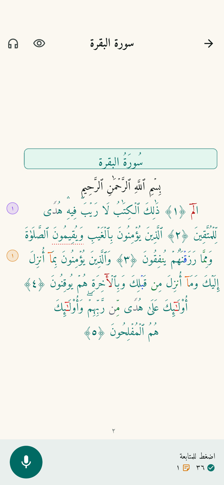

ق
قرآن AI
بلا إعلانات
راجع حفظك
بلا مقاطعة
اقرأ من حفظك، والتطبيق يتابعك ويدوّن الملاحظات في الهامش لتراجعها حين تنتهي.

٢
ملاحظتان في الآية الثانية — اضغط لتراها
متابعة كلمة بكلمة
وضع الحفظ
أحكام التجويد
حمّل مجانًا